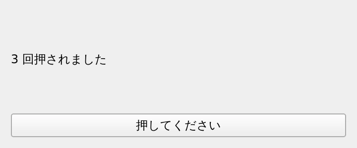
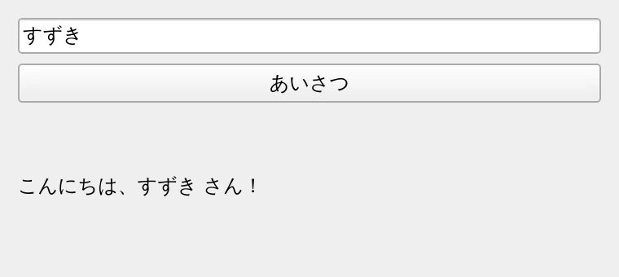

第 3 章·読了目安 12 分
第3章 シグナルとスロット — 部品どうしをつなぐ
「ボタンが押されたら何かする」を Qt はどう表現するのか。Qt のいちばんの発明であり、Qt6 で書き方が変わった部分でもあります。
前の章のウィンドウは、ただ表示されるだけで何もしませんでした。 「ボタンが押されたら何かする」を、Qt はどう書くのでしょうか。
Qt の答えがシグナルとスロットです。 これは Qt が 1990 年代から使い続けている仕組みで、 Qt がいまも使われ続けている理由のひとつでもあります。
2 つの言葉
| 言葉 | 意味 | たとえるなら |
|---|---|---|
| シグナル | 「何かが起きた」という通知。ウィジェットが自分から発する | 「押されました！」という叫び声 |
| スロット | その通知を受けて実行される処理。ただの関数でよい | 叫び声を聞いて動く人 |
| connect | この 2 つを結びつける操作 | 電話線をつなぐこと |
ボタンを押して数を数える
"""シグナルとスロット — ボタンが押されたら数を増やす。「押されたよ」という通知（シグナル）と、「押されたときにやること」（スロット）をつなぐのが connect。実行: python ch03_signals.py"""import sysfrom PySide6.QtWidgets import (QApplication, QLabel, QPushButton, QVBoxLayout, QWidget)app = QApplication(sys.argv)window = QWidget()window.setWindowTitle("シグナルとスロット")window.resize(360, 150)label = QLabel("まだ押されていません")button = QPushButton("押してください")button.setObjectName("countButton") # 教材の自動撮影で使うための名前layout = QVBoxLayout(window)layout.addWidget(label)layout.addWidget(button)count = 0def on_clicked(): """スロット。ただの関数でよい。""" global count count += 1 label.setText(f"{count} 回押されました")# ここが接続。button の clicked シグナルが出たら on_clicked を呼ぶ。button.clicked.connect(on_clicked)window.show()sys.exit(app.exec())
肝心なのはこの 1 行です。
button.clicked.connect(on_clicked)
connect(on_clicked()) と書くと、
その場で関数が実行され、その戻り値（多くは None）が接続されます。
結果、起動した瞬間に 1 回だけ動いて、以後ボタンを押しても何も起きません。
渡すのは「関数そのもの」なので、カッコは付けません。
button.clicked.connect(on_clicked) # ○ 正しいbutton.clicked.connect(on_clicked()) # ✗ その場で呼ばれてしまうよく使うシグナル
シグナルはウィジェットごとに決まっています。よく使うものを挙げておきます。
| ウィジェット | シグナル | 飛んでくるタイミング | 渡される値 |
|---|---|---|---|
QPushButton | clicked | 押して離したとき | （なし） |
QLineEdit | textChanged | 文字が変わるたび | 変更後の文字列 |
QLineEdit | returnPressed | Enter が押されたとき | （なし） |
QCheckBox | toggled | チェックが変わったとき | bool |
QComboBox | currentTextChanged | 選択が変わったとき | 選ばれた文字列 |
QSlider | valueChanged | 値が変わったとき | int |
値が渡されるシグナルは、スロット側でその値を引数として受け取れます。
def on_text_changed(text): # textChanged は文字列を 1 つ渡してくる print("いま入力されているのは:", text)edit.textChanged.connect(on_text_changed)
シグナルが値を渡してきても、スロット側が引数を持っていなければ、
Qt は黙って値を捨ててくれます。
def on_changed(): のように引数なしで書いても動きます。
ウィジェット同士を直接つなぐ
スロットは自分で書いた関数だけでなく、ウィジェットが最初から持っているメソッドでもかまいません。 これを使うと、自分では 1 行も処理を書かずに連動させられます。
# チェックボックスの ON/OFF で、ボタンの有効・無効を切り替えるcheckbox.toggled.connect(button.setEnabled)# スライダーを動かすと、数値入力欄の値も一緒に動くslider.valueChanged.connect(spinbox.setValue)spinbox.valueChanged.connect(slider.setValue)自分でシグナルを作る
自作のクラスから「何かが起きた」を知らせたいときは、シグナルを自分で定義します。
"""自分でシグナルを作る — Signal と @Slot。自作のシグナルは「クラス変数」として宣言する。インスタンス変数（self.xxx = Signal()）にしても動かないので注意。実行: python ch03_custom_signal.py"""import sysfrom PySide6.QtCore import Signal, Slotfrom PySide6.QtWidgets import (QApplication, QLabel, QLineEdit, QPushButton, QVBoxLayout, QWidget)class NameForm(QWidget): # ★ クラス直下で宣言する。str は「このシグナルが文字列を1つ運ぶ」という意味。 submitted = Signal(str) def __init__(self): super().__init__() self.setWindowTitle("自作シグナル") self.resize(380, 170) self.edit = QLineEdit() self.edit.setObjectName("nameEdit") self.edit.setPlaceholderText("名前を入れて［あいさつ］を押す") button = QPushButton("あいさつ") button.setObjectName("greetButton") button.clicked.connect(self._emit_submitted) self.result = QLabel("―") layout = QVBoxLayout(self) layout.addWidget(self.edit) layout.addWidget(button) layout.addWidget(self.result) # 自分のシグナルを、自分のスロットにつなぐ。 self.submitted.connect(self.greet) def _emit_submitted(self): # emit() でシグナルを「発射」する。 self.submitted.emit(self.edit.text()) @Slot(str) def greet(self, name: str): """@Slot を付けると Qt 側に型が伝わり、わずかに速く・安全になる。""" self.result.setText(f"こんにちは、{name or 'ななし'} さん！")app = QApplication(sys.argv)form = NameForm()form.show()sys.exit(app.exec())
__init__ の中で self.submitted = Signal(str) と書いても動きません。
Qt はクラスが定義される時点でシグナルを登録する必要があるためです。
かならずクラスの直下（メソッドの外）に書いてください。
class NameForm(QWidget): submitted = Signal(str) # ○ クラス直下 def __init__(self): self.submitted = Signal(str) # ✗ これでは動かない
@Slot(str) を付けなくてもスロットとして動きます。
付けると Qt 側に型が伝わるので、わずかに速くなり、
別スレッドからの呼び出しなど込み入った場面での安全性も上がります。
「付けておくと得だが、忘れても壊れない」くらいの理解で十分です。
ループの中で connect するときの罠
ボタンをいくつも作って「何番が押されたか」を知りたい、というのはよくある要求です。 ここには Python 側の有名な落とし穴があります。
for i in range(1, 4): button = QPushButton(f"{i} 番") button.clicked.connect(lambda: label.setText(f"{i} 番が押されました"))
lambda の中の i は、作られた時点の値ではなく、呼ばれた時点の値を見ます。
ボタンが押されるのはループが終わったずっと後なので、i はすでに最後の値になっています。
回避方法は 2 つあります。
"""ループの中で connect するときの罠と、その回避方法。ボタンを 3 つ作って「何番のボタンが押されたか」を表示したい。lambda の中で変数をそのまま使うと、全部同じ値になってしまう。実行: python ch03_lambda_trap.py"""import sysfrom functools import partialfrom PySide6.QtWidgets import (QApplication, QLabel, QPushButton, QVBoxLayout, QWidget)app = QApplication(sys.argv)window = QWidget()window.setWindowTitle("lambda の罠")window.resize(360, 210)layout = QVBoxLayout(window)label = QLabel("どれかを押してください")layout.addWidget(label)for i in range(1, 4): # ✗ NG: lambda: label.setText(f"{i} 番") と書くと、 # 呼ばれた時点の i（＝ループ終了後の 3）を見てしまう。 # # ○ OK その1: デフォルト引数で「今の値」を捕まえる button = QPushButton(f"{i} 番のボタン") button.clicked.connect(lambda checked=False, n=i: label.setText(f"{n} 番が押されました")) layout.addWidget(button)# ○ OK その2: functools.partial を使う（引数の意図がはっきりする）extra = QPushButton("partial で接続したボタン")extra.clicked.connect(partial(lambda n: label.setText(f"{n} 番が押されました"), 99))layout.addWidget(extra)window.show()sys.exit(app.exec())
clicked シグナルは、実は checked（bool）という値を渡してくることがあります。
そのため lambda n=i: ... と書くと、n にその bool が入ってしまいます。
上のサンプルで lambda checked=False, n=i: ... と
ダミーの引数を先に置いているのはこのためです。
接続を切る
一時的に反応させたくないときは disconnect() で切れます。
button.clicked.disconnect(on_clicked) # この接続だけ切るbutton.clicked.disconnect() # このシグナルの接続を全部切る
ただし、値を設定するときに valueChanged が飛んで無限ループになる、
といった場面では blockSignals() のほうが素直です。
slider.blockSignals(True)slider.setValue(50) # ここでは valueChanged が飛ばないslider.blockSignals(False)ch03_signals.pyにもう 1 つボタンを足し、押すとカウントが 0 に戻るようにする。QLineEditとQLabelを置き、入力した文字がそのままラベルに映るようにする（ヒント:textChangedとsetTextを直接つなぐ）。
この章のまとめ
送り手.シグナル.connect(受け手)が基本形。受け手にカッコは付けない。- スロットはただの関数でよく、ウィジェットのメソッドを直接つなぐこともできる。
- 自作シグナルは
Signal(型)をクラス直下に書き、emit()で発射する。 - ループ内で
lambdaを使うときは、デフォルト引数かpartialで値を捕まえる。